Adaptive Training Run
Training Runs Overview#
The page consists of a panel providing access to training and a list of training runs.
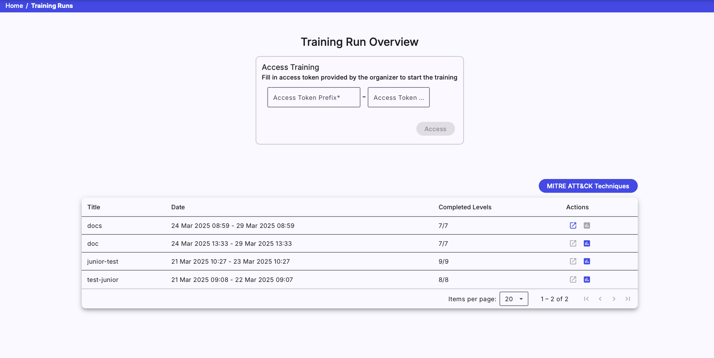
1. Access Training#
Enter the access token prefix and PIN provided by the instructor of the training instance into the two fields shown in the above figure. By clicking on the 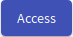 button, the system checks if there are any active training instances with a corresponding access token and any available sandboxes. If those conditions are fulfilled, the trainee will access the training run (particular training) with an assigned unique sandbox.
Note
If a trainee has already accessed a training run in a particular training instance and hasn’t finished it yet, the training run will be resumed.
If a trainee has finished one training run, he will not be able to start another one instantly. However, to enable another run of the same training, you can delete the old run.
2. Training Runs#
It lists all training runs of the logged-in trainee. Each table row represents a training run of a particular training instance (trainee can access multiple training runs within training instance). The training run can be unfinished or finished. An unfinished run can be resumed using the button or entering the access token in the Access Training panel.
Training Run#
In the training run, trainees will go through predesigned phases. There is a bar listing all of the phases in order at the top of the training run page. Visited phases are highlighted in blue , the currently selected phase is highlighted in pink , and non-visited are in grey . If backward mode is enabled by an instructor, a trainee can move between visited phases by clicking the phase in the bar. In the current version, there are four types of phases available (Questionnaire, Info, Access, and Training).
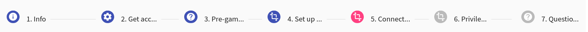
1. Questionnaire Phase#
At the questionnaire phase, a trainee must answer the different types of questions. Questions that are left blank are considered to be wrongly answered.
There are three types of questions:
- Free Form Question (FFQ): Trainees are asked to provide the text answer to the predefined field.
- Multiple Choice Questions (MCQ): Trainees are asked to select only correct answers from the choices offered as a list.
- Rating Form Questions (RFQ): Trainees are asked to choose one option from a spectrum.
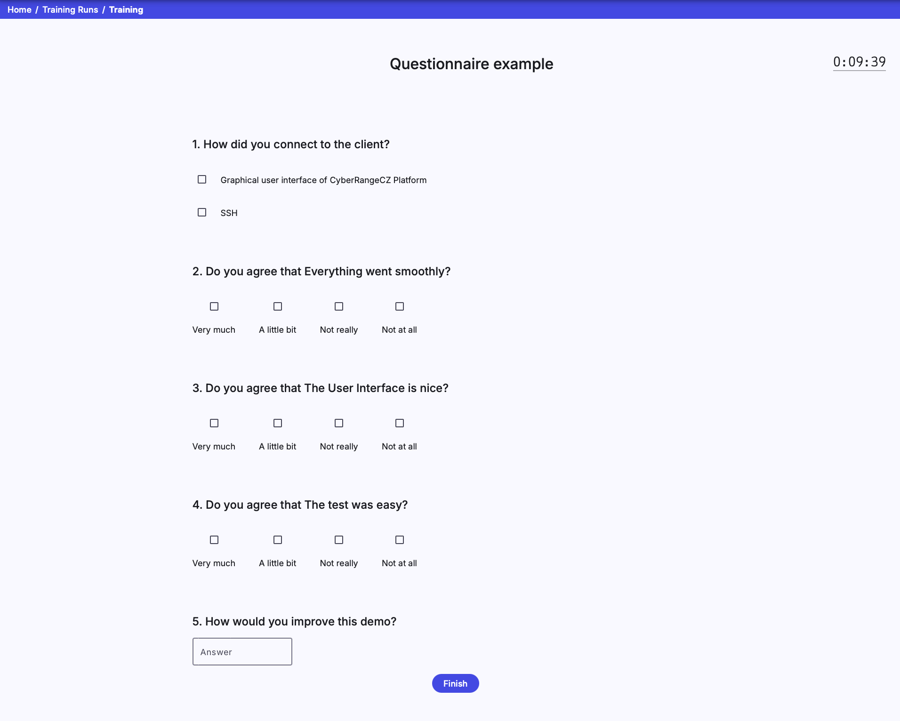
2. Info Phase#
The info phase provides essential information to trainees in text form.
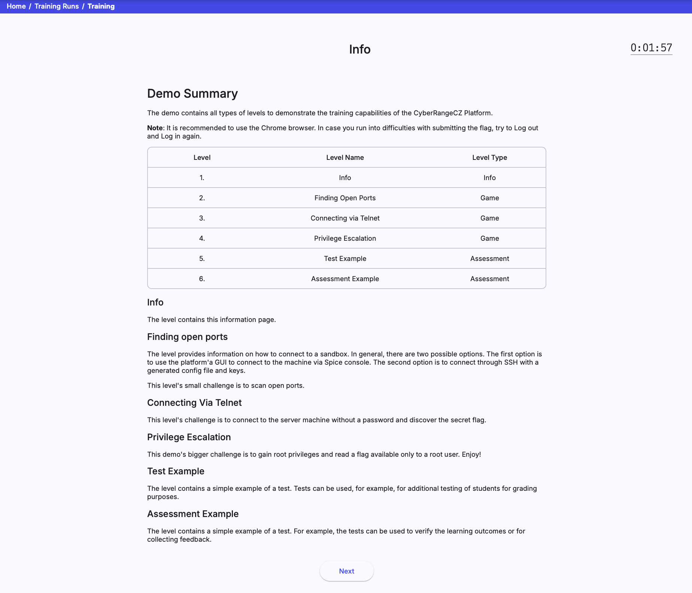
3. Access Phase#
The access phase provides information to trainees on how to access cloud or local sandbox.
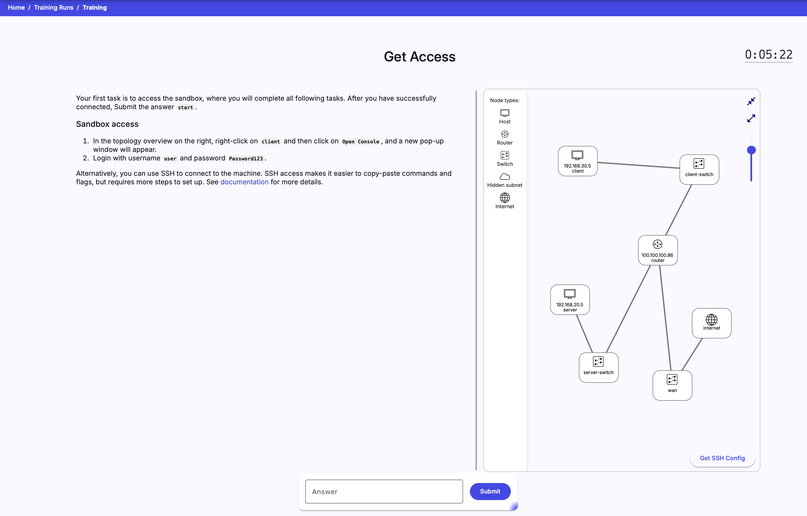
4. Training Phase#
The trainee must complete the assignment specified on the page’s left side at the training phase. On the right side, the sandbox topology supplemented by legend is displayed. The layout of the topology can be changed with the controls panel(see the following figure):
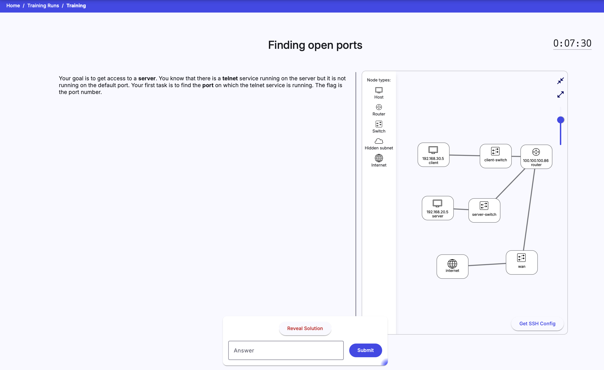
VM Manipulation#
Nodes with cloud icons can be expanded. The number inside the cloud indicates the number of nodes that are collapsed.
Right-click on the selected network node (host or router), the following menu will be opened:
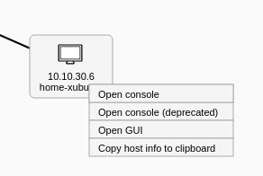
-
Open console: Connect to the particular network node’s Command Line Interface (CLI) using the Apache Guacamole. When you connect to the Guacamole, you will see the following console in a new browser tab.
-
Open console (deprecated): Connect to the web console of the particular network node using SPICE protocol. The feature is provided by OpenStack cloud, and console types may vary. When you connect to the SPICE client, you will see the following console in a new browser tab.
Warning
In the case of local sandboxes, only the last option Copy host info to clipboard is available in the menu.
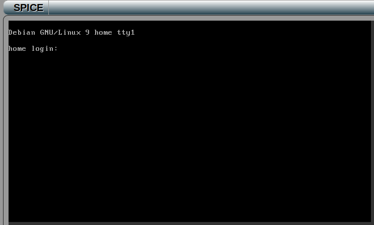
Info
To scroll console output up, use Shift + Page Up, and to scroll it down, use Shift + Page Down.
-
Open GUI: Connect to the particular network node’s Graphical User Interface (GUI) using the Apache Guacamole. This option might not be visible if the VM does not have GUI configured. When you connect to the Spice client, you will see the following console in a new browser tab.
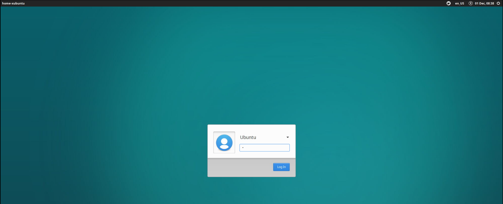
Warning
All the above options of connecting to the corresponding VM require correct login credentials.
- Copy host info to clipboard: Copy the content of the node tooltip to the clipboard.
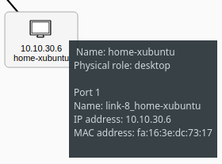
Solution#
If hints are not enough, the trainee can reveal the solution by clicking the .
Submit#
When the trainee finds out the answer for the current training phase, they can proceed to the next phase by typing the answer to the input field and submitting it by clicking the button in the control panel.
SSH Access#
In addition to connecting to the sandbox using Spice or Guacamole, it is also possible to connect to the sandbox machines locally using SSH. To do that, click the 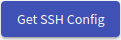 button and download the ZIP archive with the configuration of a user SSH access to the respective sandbox. More about SSH access can be found in Sandbox SSH Access.
Training Run Results#
When the trainee finishes a training run, they will see the visualization of their behavior in training. The visualization is described in detail in Visualizations for Adaptive Training.